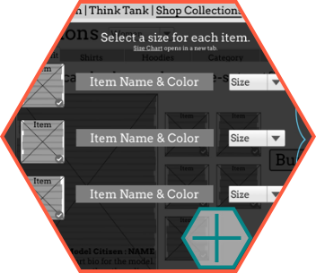
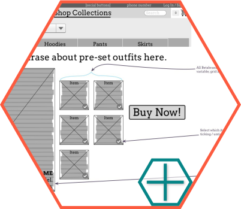

betabrand

betabrand is an online clothing community based in San Francisco, California. They design, manufacture, and release new products in small batches. Unlike typical e-commerce retailers, Betabrand also offers a highly-curated inventory of customer-designed and crowdfunded clothing.
All of the products on the current site are shown on the home page. Every single product, in every single color. The navigation drop-downs are long and confusing. A lot of the product categories seem to have been invented for a single product instead of included within another. The search bar does not return accurate results.
Through their website, betabrand wants to showcase their wide range of products while maintaining a quirky, fun, and creative brand image.

Clickable prototype. Slide Deck.
This was a two-week solo redesign and simplification of the betabrand website, which included adding a "purchase outfit" feature.
I was tasked with designing for two of three primary (sexist) user journeys laid out in the project brief. These two user flows influenced the user research and information architecture.

For this two-week solo project, we were provided with a problem statement, personas and user flows. It required user research and testing, sketches, a paper prototype, wireframes, and a clickable prototype. I also synthesized user feedback, and from that created new Information Architecture and a site map.
Created Information Architecture, user flow diagrams, sketches, paper prototype, and wireframes based on user research and testing.
Omnigraffle, Invision, Google Slides.

The first step was to figure out where betabrand fell in the marketplace. I quickly discovered that they don't have any direct competition - there are other sites doing crowdsourcing of various types, and there are other local SF clothing retailers, but no one is doing both. This is both fantastic (because the market is wide open) but also difficult (because there is no standard to unify the experience).
All of my user and market research pointed to two very specific ways to improve the site : simplifying the Information Architecture, and providing more information about their crowdsourcing/funding section without too many clicks.